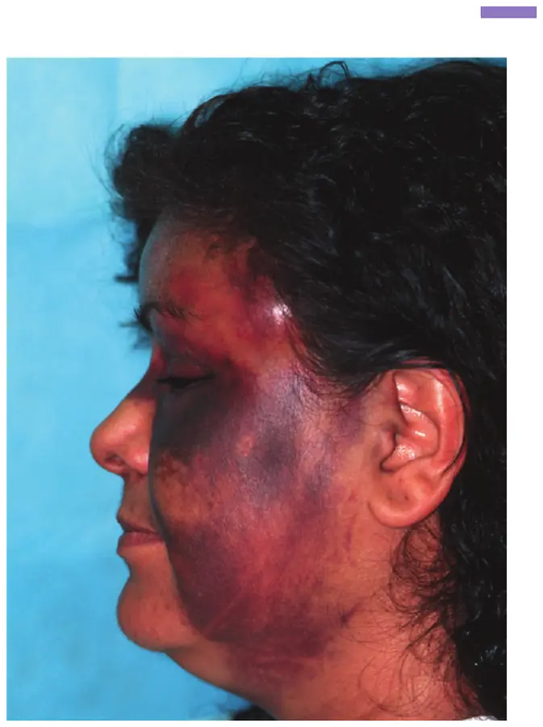

نسخه استخراجشده؛ ترجمه یا تأیید علمی انجام نشده است. وضعیت: captured
تعریف: ساییدگی زخمی است که از اصطکاک میان یک جسم و سطح بافت نرم ایجاد میشود. این زخم معمولاً سطحی است، اپیتلیوم را برهنه میکند، و گاهی لایههای عمیقتر را درگیر میسازد.

و دو ویژگی که با هم میآیند:
و یک تمایز مهم دربارهی اسکار: اگر ساییدگی بهویژه عمیق نباشد، اپیتلیالیزاسیون مجدد بدون اسکار رخ میدهد. ولی وقتی ساییدگی به لایههای عمیقتر درم گسترش مییابد، ترمیم بافتهای عمیقتر با تشکیل بافت اسکار انجام میشود و میتوان انتظار مقداری تغییرشکل دائمی را داشت.
و مهمترین نکتهی این اسلاید — خالکوبی تروماتیک: نواحی ساییدهشده باید کاملاً تمیز شوند تا مواد خارجی برداشته شوند؛ صابون جراحی و شستوشوی فراوان با سرم برای این کار مفیدند. و در این مورد هیچ تخفیفی در کار نیست:
تمام ذرات مادهی خارجی باید برداشته شوند. اگر این ذرات اجازه یابند درون بافت بمانند، یک «خالکوبی» دائمی که درمانش دشوار است پدید میآید.
و اگر ساییدگی عمیق و آلوده به خاک یا مواد دیگر باشد: ممکن است لازم باشد ناحیه بیحس شود و از یک برس اسکراب جراحی (یا مسواک) برای برداشتن کامل دبری استفاده گردد.
درمان پس از تمیز کردن — و چند «نه» مهم:
و روند ترمیم: طی هفتهی بعد، اپیتلیالیزاسیون مجدد زیر دلمه (eschar) رخ میدهد — دلمه همان پوستهی خون و سرم خشکشدهای است که پس از آسیب بافت نرم پدید میآید — و سپس دلمه میافتد.
و یک اندیکاسیون ارجاع: اگر پس از تمیز کردن زخم، ساییدگی عمیقی روی سطح پوست کشف شود، ارجاع به جراح دهان و فک و صورت اندیکاسیون دارد — چون ممکن است پیوند پوست برای پیشگیری از مقادیر بیشازحد اسکار لازم باشد.
و یک اعتراف دربارهی خودمان: دندانپزشک میتواند ساییدگی را یاتروژنیک بسازد — مانند وقتی که شنک یک فرز در حال چرخش به مخاط دهان میخورد، یا وقتی پک گاز یا پارچهی دیگری حین برداشتن از دهان مخاط را میساید. خوشبختانه اپیتلیوم دهان بهسرعت بازسازی میشود و درمانی جز بهداشت روتین دهان اندیکاسیون ندارد.
تعریف کوفتگی: کوفتگی که رایجتر کبودی نامیده میشود، نشان میدهد مقداری گسیختگی بافتی درون بافتها رخ داده که به خونریزی زیرجلدی یا زیرمخاطی بدون شکستگی سطح بافت نرم انجامیده است.
و مهمترین جملهی تشخیصی این درس: کوفتگیها معمولاً از تروما با جسم بینوک ایجاد میشوند، ولی اغلب همراه آسیبهای دنتوآلوئولار یا شکستگیهای استخوان صورت هم یافت میشوند — و در این حالت، تروما به بافتهای عمیقتر (مانند کف دهان یا وستیبول لبیال) از اثر برهمزنندهی استخوانهای شکسته رخ داده است.
پس اهمیت کوفتگی از دیدگاه تشخیصی این است: وقتی کوفتگی رخ میدهد، باید به دنبال شکستگی استخوانی گشت.
درمان کوفتگی — و منطق فیزیکیاش:
و سیر طبیعی: چون گسیختگی سطح بافت نرم رخ نداده، بدن با گذشت زمان خونریزی تشکیلشده را جذب میکند و کانتور طبیعی بازسازی میشود. ولی طی چند روز آینده بیمار میتواند انتظار اکیموز را داشته باشد — تغییر رنگ ارغوانی ناشی از نشت خون به پوست یا مخاط — که پیش از محو شدن، رنگهای گوناگونی (آبی، سبز، زرد) به خود میگیرد. این نواحی میتوانند تا زیر ترقوهها امتداد یابند و نگرانی بسازند، ولی بیضررند.
و یک قاعدهی آنتیبیوتیک با یک استثنای مهم:
و تعریف پارگی: پارگی پارگی بافتهای اپیتلیال و زیراپیتلیال است — شاید شایعترین نوع آسیب بافت نرم — و بیشتر از جسم تیزی مانند چاقو یا تکهی شیشه ایجاد میشود. اگر جسم تیز نباشد، پارگیهای ایجادشده میتوانند دندانهدار باشند، چون بافت بهمعنای واقعی با نیروی ضربه پاره میشود.
و دو نکتهی بالینی مهم: